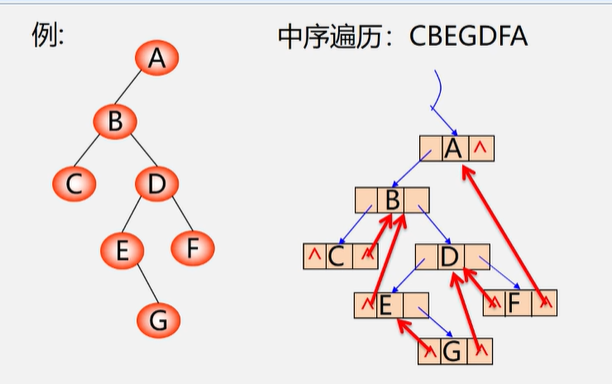
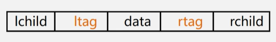
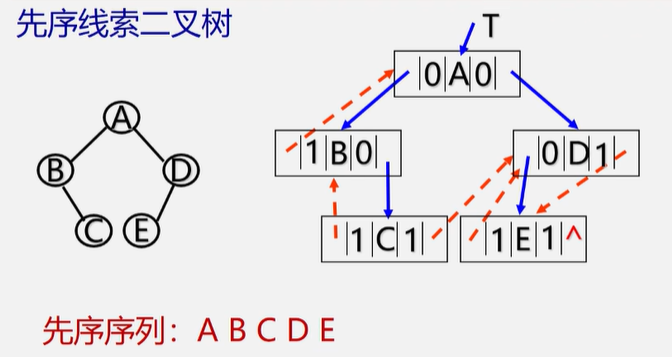
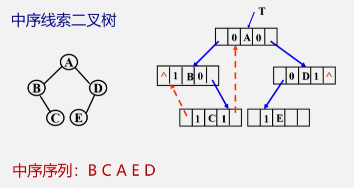
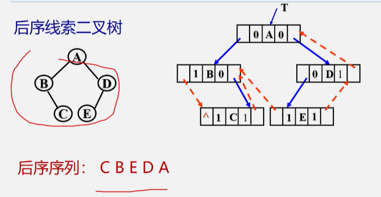
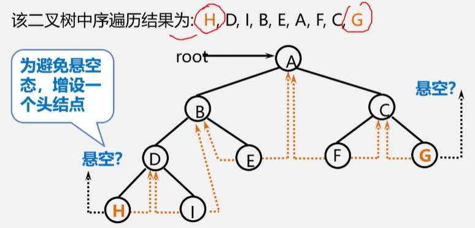
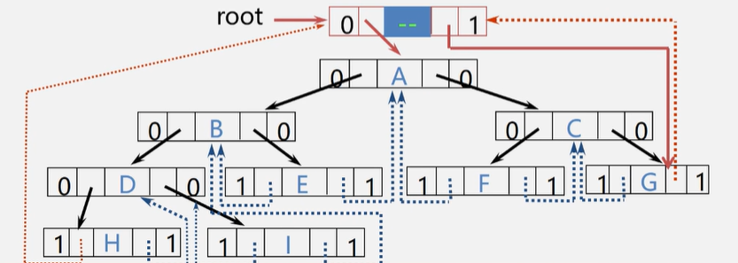

线索二叉树
n个结点的二叉树：一共2n个指针域，n-1个用来指示左右孩子[根结点不是孩子]，n+1个指针域为空
利用二叉链表中的空指针域:
- 某结点的左孩子为空，则将空的左孩子指针域改为指向其前驱
- 某结点的右孩子为空，则将空的右孩子指针域改为指向其后继
- 线索：改变指向的指针
- 线索二叉树：加上线索的二叉树
- 线索化：对二叉树按某种遍历次序->线索二叉树的过程

区分指向孩子/前驱后继：
| ltag | 0 | lchild | 左孩子 |
|---|---|---|---|
| 1 | 前驱 | ||
| rtag | 0 | rchild | 右孩子 |
| 1 | 后继 |

typedef struct BiThrNode{
int data;
int ltag,rtag;
struct BiThrNode *lchild,rchild;
}BiThrNode,*BiThrTree;



增设了一个头结点:
Itag=0，Ichild指向根结点
rtag=1，rchild指向遍历序列中最后一个结点
遍历序列中第一个结点的lc域和最后一个结点的rc域都指向头结点
